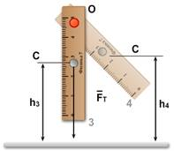
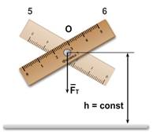

|
Маленькие дети любят
возиться с кубиками, строят из
них сказочные башни, домики, но
нередко, к большому огорчению малыша, почти достроенная башня рассыпается. Это
значит, что нарушено условие равновесия. В природе существуют три вида
равновесия: безразличное,
устойчивое
и неустойчивое.
На рисунке показаны три шара. Первый шар лежит на
плоской горизонтальной поверхности, второй — на дне чашки, третий — на
выпуклой поверхности. Если первый шар, передвинуть влево или вправо шар
по-прежнему будет находиться в положении равновесия. Такое положение равновесия
называют безразличным.
Иначе обстоит дело со вторым шаром. Если мы его
отведем вправо или влево и отпустим, шар вернется в первоначальное положение.
Это произойдет потому, что при отклонении шара равнодействующая сила направлена
к положению равновесия и возвращает шар в положение равновесия. Такое положение
равновесия называют устойчивым.
Если при малых отклонениях тела из состояния равновесия возникают силы или
моменты сил, стремящиеся возвратить тело в равновесное состояние, такое
равновесие называется устойчивым.
По-другому ведет себя третий шар. Если мы
слегка отведем его от положения равновесия, то шар упадет. Такое положение
равновесия называют неустойчивым. Это происходит потому, что
равнодействующая сил направлена в сторону от положения равновесия.
Если при малом отклонении тела из состояния
равновесия возникают силы или моменты сил, стремящиеся удалить тело от положения
равновесия, такое состояние называют неустойчивым.
Если тело имеет
неподвижную ось вращения, возможны все три вида равновесия. Тело, имеющее ось
вращения, находится в равновесии, когда вертикальная прямая, проходящая через
центр масс тела, проходит через ось вращения этого тела.
|
 |
 |
 |
а)
б) в)
Установим линейку так, чтобы ее центр масс С
находится выше оси вращения О (рис. а). Малейший наклон линейки приведет к тому,
что опрокинется по дуге вокруг оси О к поверхности Земли. Следовательно,
равновесие линейки является неустойчивым. Таким образом, тело, имеющее
ось вращения, находится в неустойчивом равновесии тогда, когда центр масс
расположен выше оси вращения.
Пусть теперь центр масс линейки находится ниже
точки подвеса (рис. б). Если мы отклоним линейку из этого положения, и отпустим,
она вернется в исходное положение. Следовательно, равновесие линейки устойчиво.
Это значит, что равновесие тела, имеющего ось вращения, является устойчивым
тогда, когда центр масс находится ниже оси вращения.
В случае, когда ось вращения линейки проходит
через ее центр масс (рис. в), равновесие является безразличным, так как линейка
может находиться в любом положении. Безразличное равновесие возникает, когда
ось вращения проходит через центр масс.
Равновесие тел, имеющих площадь опоры.
Большинство тел покоится
на опорах,
в том числе и человек.
Стоящий предмет (тело, имеющее площадь опоры), находится в равновесии, если
вертикальная линия, проведенная через центр масс тела, проходит через площадь
опоры, то есть внутри контура, образованного линиями, соединяющими
точки опоры. Если же эта линия не пересекает площадь опоры, то тело
опрокидывается.
На первом рисунке показано
тело, имеющее форму цилиндра. Если его чуть-чуть наклонить и отпустить, оно
возвратится в исходное положение, так как вертикальная линия, проведенная через
центр масс тела, проходит через площадь опоры. Если же его отклонить на большой
угол, при котором вертикальная прямая, проходящая через центр масс тела, выйдет
за пределы площади опоры, то тело опрокинется.

Метки: равновесие |